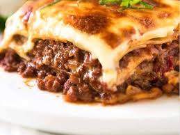

Back to homepage
Lasagne

Description
Lasagne is a traditional Italian dish made of stacked layers of thin flat pasta alternating with fillings such as ragù (ground meats and tomato sauce) and other vegetables, cheese (which may include ricotta and parmesan), and seasonings and spices such as garlic, oregano and basil. The dish may be topped with melted grated mozzarella cheese. Typically, the cooked pasta is assembled with the other ingredients and then baked in an oven. The resulting lasagne casserole is cut into single-serving square portions.
Ingredients
- Lasagne sheets
- Minced beef
- Tomato sauce
- Onions
- Garlic
- Carrots
- Celery
- Red wine
- Beef stock
- Tomato paste
- Flour
- Milk
- Butter
- Nutmeg
- Grated cheese
Instructions
- Preheat the oven to 180°C (350°F).
- Heat some oil in a large pan and fry the onions and garlic until soft.
- Add the minced beef and cook until browned.
- Add the tomato sauce, carrots, celery, red wine, and beef stock. Simmer for 1 hour.
- Make a roux by melting butter in a pan, adding flour, and then slowly whisking in milk until thickened.
- Season the roux with salt, pepper, and nutmeg.
- Spread a layer of the meat sauce in a baking dish, followed by a layer of lasagne sheets, and then a layer of the roux. Repeat until all ingredients are used up.
- Top with grated cheese and bake for 45 minutes.